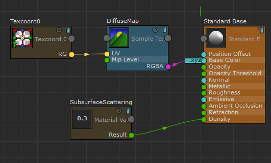
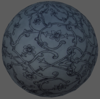
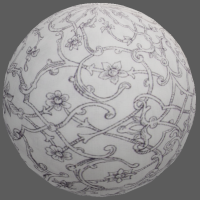

您可以使用 StingrayPBS 节点创建次表面散射效果，方法为将曲面设置为不透明，并将“密度”(Density)属性设置为小于 1。
- 将 StingrayPBS 着色器指定给对象，然后在“预设材质”(Preset Material)下拉列表中选择“自定义”(Custom)，以创建新的 ShaderFX 图表。
- 选择“标准基础”(Standard Base)节点，并将“融合模式”(Blend Mode)设置为“不透明”(Opaque)。
- 创建“材质变量”(Material Variable)节点。
在“属性编辑器”(Attribute Editor)中，将其“类型”(Type)设置为“标量”(Scalar)。（可选操作）为清楚起见，可以将该节点重命名为“次表面散射”。
- 将“材质变量”(Material Variable)节点的“结果”(Result)输出连接到“标准基础”(Standard Base)节点的“密度”(Density)输入。

- 关闭 ShaderFX 编辑器后，在 “属性编辑器”(Attribute Editor)中调整“次表面散射”(Subsurface Scattering)值。
在本示例中，灯光在球体后方。如果未连接“密度”(Density)输入，该球体将因为没有灯光穿过而显示为暗色。

如果将“密度”(Density)输入（“次表面散射”(Subsurface Scattering)值）设置为 0.2，灯光将会穿过半透明对象的曲面，球体将被照亮。

注：
图案纹理由 www.cgtextures.com 提供。